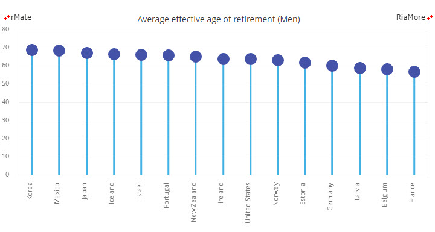
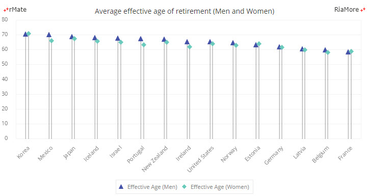
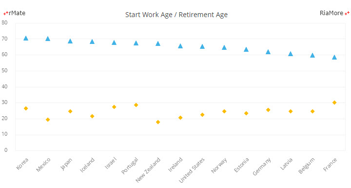

롤리팝 차트
롤리팝 차트는 막대의 끝에 원(circle)이 표시된다는 점을 제외하면 컬럼 차트와 동일한 유형의 차트입니다.
롤리팝 차트가 컬럼 차트에 비해서 유용하게 활용되는 경우는 차트에 표시되는 대부분의 값들이 80-90% 정도로 높은 값들일 때입니다.
이런 경우에 긴 막대들이 차트에서 나열되면 시각적으로 보기에 어렵고 값의 차이를 알기 쉽지 않기 때문입니다.
롤리팝 차트는 <LollipopChart> 노드의 series 속성값에 <LollipopSeries> 노드를 설정하여 생성할 수 있습니다.
다음은 롤리팝 차트를 생성하는 코드와 이를 적용해서 출력한 차트의 예제입니다.
<LollipopChart showDataTips="true" dataTipFormatter="{numFmt}">
<series>
<LollipopSeries yField="Men" displayName="Effective Age (Men)" showDataEffect="{ss}" itemRenderer="CircleLollipopItemRenderer" maxPopSize="8">
<stroke>
<Stroke color="#ff4273" weight="1"/>
</stroke>
<fills>
<SolidColor color="#ff4273"/>
</fills>
</LollipopSeries>
</series>
</LollipopChart>

See the CodePen 알메이트 차트 - 롤리팝 차트
<LollipopSeries> 노드의 주요 속성은 다음과 같습니다.
| 속성명 |
유효값 (*: 기본값) |
설명 |
| itemRenderer |
CircleLollipopItemRenderer(*)
TriangleLollipopItemRenderer
RectangleLollipopItemRenderer
InvertedTriangleLollipopItemRenderer
DiamondLollipopItemRenderer
|
차트상의 데이터 포인트(데이터 아이템)에 표현될 도형을 렌더링하는 클래스를 설정합니다.
|
| maxPopSize |
숫자
기본값: NaN
|
데이터 포인트에 표시되는 도형(사탕)의 최대 크기를 설정합니다.
|
다중 시리즈 롤리팝 차트
series 속성값에 여러 개의 <LollipopSeries> 노드를 설정하여 다중 시리즈 롤리팝 차트를 생성할 수 있습니다.
다음은 여러 개의 <LollipopSeries> 노드를 설정하는 코드와 이를 적용해서 출력한 차트의 예제입니다.
<series>
<LollipopSeries yField="Men" displayName="Effective Age (Men)" showDataEffect="{ss}" itemRenderer="CircleLollipopItemRenderer" maxPopSize="5">
<stroke>
<Stroke color="#ff4273" weight="1"/>
</stroke>
<fills>
<SolidColor color="#ff4273"/>
</fills>
</LollipopSeries>
<LollipopSeries yField="Women" displayName="Effective Age (Women)" showDataEffect="{ss}" itemRenderer="CircleLollipopItemRenderer" maxPopSize="5">
<stroke>
<Stroke color="#b9f9ff" weight="1"/>
</stroke>
<fills>
<SolidColor color="#b9f9ff"/>
</fills>
</LollipopSeries>
</series>

See the CodePen 알메이트 차트 - 다중 시리즈 롤리팝 차트
오버레이 롤리팝 차트
다중 시리즈 롤리팝 차트에서 <LollipopChart> 노드의 type 속성을 “overlaid” 으로 설정하면 원(막대 사탕)이 오버레이 형태로 표시됩니다.
이 때 막대 선(lineStroke 속성)을 설정하는 <Stroke> 노드의 weight 와 alpha 속성값을 조절하여 막대 선을 표시하지 않고 원(막대 사탕)만 오버레이 형태로 표현할 수 있습니다.
다음은 오버레이 롤리팝 차트를 표현하는 코드와 이를 적용해서 출력한 차트의 예제입니다.
<LollipopChart showDataTips="true" dataTipFormatter="{numFmt}" type="overlaid">
<series>
<LollipopSeries yField="Normal" displayName="Normal Age (Men)" showDataEffect="{ss}" itemRenderer="CircleLollipopItemRenderer" maxPopSize="5">
<stroke>
<Stroke color="#b9f9ff" weight="1"/>
</stroke>
<lineStroke>
<Stroke color="#ffffff" weight="0"/>
</lineStroke>
<fills>
<SolidColor color="#b9f9ff"/>
</fills>
</LollipopSeries>
<LollipopSeries yField="Effective" displayName="Effective Age (Men)" showDataEffect="{ss}" itemRenderer="CircleLollipopItemRenderer" maxPopSize="5">
<stroke>
<Stroke color="#ff4273" weight="1"/>
</stroke>
<lineStroke>
<Stroke color="#ffffff" weight="0" alpha="0"/>
</lineStroke>
<fills>
<SolidColor color="#ff4273"/>
</fills>
</LollipopSeries>
</series>
</LollipopChart>

See the CodePen 알메이트 차트 - 오버레이 롤리팝 차트